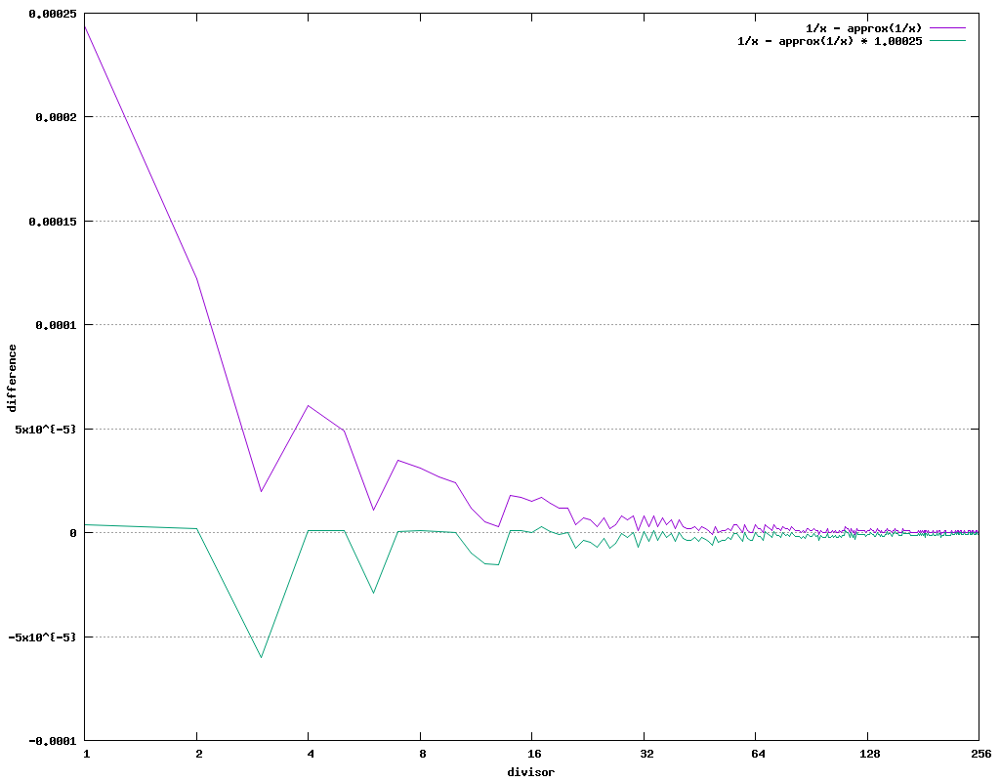

| Author: | Wojciech Muła |
|---|---|
| Added on: | 2024-12-21 |
| Updated on: | 2024-12-22 (fixed a typo, thanks John Rinehart, clarify introduction based on HN comments, add more AVX-512 variants); 2024-12-28 (add see also section) |
Contents
Division is quite an expensive operation. For instance, latency of the 32-bit division varies between 10 and 15 cycles on the Cannon Lake CPU, and for Zen4 this range is from 9 to 14 cycles. The latency of 32-bit multiplication is 3 or 4 cycles on both CPU models.
None of commonly used SIMD ISAs (SSE, AVX, AVX-512, ARM Neon, ARM SVE) provides the integer division, only RISC-V Vector Extension does. However, all these ISAs have floating point division.
In this text we present two approaches to achieve a SIMD-ized division of 8-bit unsigned numbers:
We try to vectorize the following C++ procedure. The procedure cannot assume anything about dividends, especially if they are all equal. Thus, it is not possible to employ division by a constant.
void scalar_div_u8(const uint8_t* a, const uint8_t* b, uint8_t* out, size_t n) { for (size_t i=0; i < n; i++) { out[i] = a[i] / b[i]; } }
Compilers cannot vectorize it. For example GCC 14.1.0 produces the following assembly (stripped from code alignment junk):
2b40: 48 85 c9 test %rcx,%rcx 2b43: 74 30 je 2b75 <_Z13scalar_div_u8PKhS0_Phm+0x35> 2b45: 45 31 c0 xor %r8d,%r8d 2b60: 42 0f b6 04 07 movzbl (%rdi,%r8,1),%eax 2b65: 42 f6 34 06 divb (%rsi,%r8,1) 2b69: 42 88 04 02 mov %al,(%rdx,%r8,1) 2b6d: 49 ff c0 inc %r8 2b70: 4c 39 c1 cmp %r8,%rcx 2b73: 75 eb jne 2b60 <_Z13scalar_div_u8PKhS0_Phm+0x20> 2b75: c3 ret
An 8-bit number can be converted into single precision floating point number without any precision loss.
The generic outline of division consist the following steps:
Here is the actual implementation of SSE procedure. Note that we need to explicitly truncate the floating point number before converting back into integer. By default that conversion rounds the argument, so we would get wrong results (off by 1).
Load four 8-bit dividends.
uint32_t buf_a; memcpy(&buf_a, &a[i], 4);
And four 8-bit divisors.
uint32_t buf_b; memcpy(&buf_b, &b[i], 4);
Transfer them to SSE register and cast to 32-bit numbers.
const __m128i a_u8 = _mm_cvtsi32_si128(buf_a); const __m128i a_u32 = _mm_cvtepu8_epi32(a_u8); const __m128i b_u8 = _mm_cvtsi32_si128(buf_b); const __m128i b_u32 = _mm_cvtepu8_epi32(b_u8);
Cast 32-bit integers into floats.
const __m128 a_f32 = _mm_cvtepi32_ps(a_u32); const __m128 b_f32 = _mm_cvtepi32_ps(b_u32);
Perform division and then truncation.
const __m128 c_f32 = _mm_div_ps(a_f32, b_f32); const __m128 c_f32_2 = _mm_round_ps(c_f32, _MM_FROUND_TO_ZERO | _MM_FROUND_NO_EXC);
Convert floats back into integers.
const __m128i c_i32 = _mm_cvtps_epi32(c_f32_2);
Cast 32-bit into 8-bit numbers: gather lowest 8-bit numbers into single 32-bit word and save this word to the output array.
const __m128i c_u8 = _mm_shuffle_epi8(c_i32, _mm_setr_epi8( 0, 4, 8, 12, -1, -1, -1, -1, -1, -1, -1, -1, -1, -1, -1, -1 )); const uint32_t buf = _mm_cvtsi128_si32(c_u8); memcpy(&out[i], &buf, 4);
Rounding instruction ROUNDPS has quite big latency, at least on Intel CPUs. On IceLake it is 8 cycles, while Zen4 has only 3 cycles.
We can avoid floating point rounding by multiplying the dividend 256 (shift left by 8 bits) and shifting right by 8 the final result. The shift right can be done at no cost, because we anyway use shuffling to gather individual bytes, so it's only matter of a constant. Shifting left by 8 is suitable only for SSE code — we can use byte shuffle to shift-and-extend integers. In the case of AVX2 code, byte shuffling is done on 128-bit lanes, thus we would need more work to prepare input for that operation.
The SSE procedure is almost the same as in the previous section:
Load four dividends.
uint32_t buf_a; memcpy(&buf_a, &a[i], 4); const __m128i a_u8 = _mm_cvtsi32_si128(buf_a);
Convert dividend << 8 into 32-bit numbers.
const __m128i a_u32 = _mm_shuffle_epi8(a_u8, _mm_setr_epi8( -1, 0, -1, -1, -1, 1, -1, -1, -1, 2, -1, -1, -1, 3, -1, -1 ));
Load four divisors and convert them to 32-bit numbers.
uint32_t buf_b; memcpy(&buf_b, &b[i], 4); const __m128i b_u8 = _mm_cvtsi32_si128(buf_b); const __m128i b_u32 = _mm_cvtepu8_epi32(b_u8);
Cast all 32-bit integers into floats.
const __m128 a_f32 = _mm_cvtepi32_ps(a_u32); const __m128 b_f32 = _mm_cvtepi32_ps(b_u32);
Perform division.
const __m128 c_f32 = _mm_div_ps(a_f32, b_f32);
Convert quotient into 32-bit integers.
const __m128i c_i32 = _mm_cvtps_epi32(c_f32);
Cast quotient >> 8 into 8-bit numbers: gather bit #1 of each 32-bit word.
const __m128i c_u8 = _mm_shuffle_epi8(c_i32, _mm_setr_epi8( 0 + 1, 4 + 1, 8 + 1, 12 + 1, -1, -1, -1, -1, -1, -1, -1, -1, -1, -1, -1, -1 )); const uint32_t buf = _mm_cvtsi128_si32(c_u8); memcpy(&out[i], &buf, 4);
SSE comes with instruction RCPPS that calculates the approximate inversion of its argument: 1/x. This would allow us to use expression dividend ⋅ approx(1/divisor).
The specification says relative error does not exceed 1.5 ⋅ 2 − 12. But for our needs, the absolute error is too big to use the instruction result directly. The following table shows the results for initial x values, for which the error is significant.
However, by trial-and-error search, we found that after multiplying the dividend by value 1.00025, the result of RCPPS can be used. To be precise, any multiplier between 1.00024 and 1.00199 works.
| x | 1 / x | approx 1 / x | error | ||
|---|---|---|---|---|---|
| float | hex | float | hex | ||
| 1 | 1.000000 | 3f800000 | 0.999756 | 3f7ff000 | 0.000244 |
| 2 | 0.500000 | 3f000000 | 0.499878 | 3efff000 | 0.000122 |
| 3 | 0.333333 | 3eaaaaab | 0.333313 | 3eaaa800 | 0.000020 |
| 4 | 0.250000 | 3e800000 | 0.249939 | 3e7ff000 | 0.000061 |
| 5 | 0.200000 | 3e4ccccd | 0.199951 | 3e4cc000 | 0.000049 |
| 6 | 0.166667 | 3e2aaaab | 0.166656 | 3e2aa800 | 0.000010 |
| 7 | 0.142857 | 3e124925 | 0.142822 | 3e124000 | 0.000035 |
| 8 | 0.125000 | 3e000000 | 0.124969 | 3dfff000 | 0.000031 |
| 9 | 0.111111 | 3de38e39 | 0.111084 | 3de38000 | 0.000027 |
| 10 | 0.100000 | 3dcccccd | 0.099976 | 3dccc000 | 0.000024 |
| 11 | 0.090909 | 3dba2e8c | 0.090897 | 3dba2800 | 0.000012 |
| 12 | 0.083333 | 3daaaaab | 0.083328 | 3daaa800 | 0.000005 |
| 13 | 0.076923 | 3d9d89d9 | 0.076920 | 3d9d8800 | 0.000004 |
| 14 | 0.071429 | 3d924925 | 0.071411 | 3d924000 | 0.000017 |
| 15 | 0.066667 | 3d888889 | 0.066650 | 3d888000 | 0.000016 |
| 16 | 0.062500 | 3d800000 | 0.062485 | 3d7ff000 | 0.000015 |
| 17 | 0.058824 | 3d70f0f1 | 0.058807 | 3d70e000 | 0.000016 |
| 18 | 0.055556 | 3d638e39 | 0.055542 | 3d638000 | 0.000014 |
| 19 | 0.052632 | 3d579436 | 0.052620 | 3d578800 | 0.000012 |
| 20 | 0.050000 | 3d4ccccd | 0.049988 | 3d4cc000 | 0.000012 |
| ... | |||||
| 255 | 0.003922 | 3b808081 | 0.003922 | 3b808000 | 0.000000 |
The long division algorithm is the one we know from school.
A nice property of the algorithm is calculating both the quotient and remainder. The cons of algorithm are:
Since we're going to divide 8-bit numbers, it means that the basic step of algorithm has to be repeated eight times. Below is a reference implementation.
uint8_t long_div_u8(uint8_t dividend, uint8_t divisor) { uint8_t remainder = 0; uint8_t quotient = 0; for (int i=7; i >= 0; i--) { // make room for i-th bit of dividend at 0-th position remainder <<= 1; // inject that bit remainder |= (dividend >> i) & 1; if (remainder >= divisor) { // set i-th bit in quotient quotient |= 1 << i; // adjust remainder remainder -= divisor; } } return quotient; }
| dividend: | |
| divisor: | |
| dividend | ||||||||||||||||
| divisor | ||||||||||||||||
| reminder | ||||||||||||||||
| quotient | ||||||||||||||||
The long division can be also applied to signed integers. We need to calculate the absolute values of dividend & divisor and perform the algorithm. Then quotient has to be negated if the operands have different signs.
Since 8-bit signed integers have range − 128…127, the range of their absolute values is 0…128. It means the long division operands still have eight bits.
The algorithm consist the following operations:
extract i-th bit from the divisor and shift it into the remainder:
remainder = (remainder << 1) | ((dividend >> i) & 1);
compare the remainder and divisor;
conditionally set i-th bit in the quotient and adjust the remainder:
quotient |= 1 << i; remainder -= divisor;
In SSE & AVX2 it's easy to copy the most significant bit to the least significant bit #0. We compare the number interpreted as a signed one with zero. It yields either 0x00 or 0xff ( − 1).
We can rewrite the main loop to shift the dividend left by 1, thus we'll be able to copy all its bits using that technique.
Shifting left by 1 is simple addition, which is a really fast operation.
There's no unsigned comparison in SSE nor AVX2, only signed one. It is possible to compare two unsigned numbers with a signed comparison: we need to negate their most significant bits. This is done by XOR-ing with 0x80.
Note that we need to perform xor once for the divisor, and eight times for the remainder.
Once we get a mask from the comparison, we can easily compute masked operations.
In fact we need unconditionally shift the quotient by 1 and then conditionally set the i-th bit.
The following C code shows all the implementation details.
uint8_t long_div_u8(uint8_t dividend, uint8_t divisor) { uint8_t remainder = 0; uint8_t quotient = 0; uint8_t bit = 0x80; uint8_t divisor_xored = divisor ^ 0x80; for (int i=7; i >= 0; i--) { // msb => 0 or -1 const uint8_t msb = (int8_t)dividend < 0 ? 0xff : 0x00; // inject bit remainder -= msb; if ((int8_t)(remainder ^ 0x80) >= (int8_t)(divisor_xored) { // set i-th bit in quotient quotient |= bit; // adjust remainder remainder -= divisor; } bit >>= 1; dividend <<= 1; // make room for i-th bit of dividend at 0-th position remainder <<= 1; } return quotient; }
The actual SSE implementation.
void sse_long_div_u8(const uint8_t* A, const uint8_t* B, uint8_t* C, size_t n) { const __m128i msb = _mm_set1_epi8(int8_t(0x80)); const __m128i zero = _mm_set1_epi8(0x00); for (size_t i=0; i < n; i += 16) { __m128i dividend = _mm_loadu_si128((__m128i*)(&A[i])); const __m128i divisor = _mm_loadu_si128((__m128i*)(&B[i])); __m128i divisor_xored = _mm_xor_si128(divisor, msb); __m128i bit = msb; __m128i remainder = _mm_set1_epi16(0); __m128i quotient = _mm_set1_epi16(0); for (int j=0; j < 8; j++) { // copy msb of dividend into remainder const __m128i t0 = _mm_cmplt_epi8(dividend, zero); remainder = _mm_sub_epi8(remainder, t0); // unsigned comparison of divisor and remainder const __m128i remainder_xored = _mm_xor_si128(remainder, msb); const __m128i gt = _mm_cmpgt_epi8(divisor_xored, remainder_xored); // derive condition subtract and quotient bit const __m128i cond_divisor = _mm_andnot_si128(gt, divisor); const __m128i cond_quotient_bit = _mm_andnot_si128(gt, bit); // conditionally update remainder and quotient remainder = _mm_sub_epi16(remainder, cond_divisor); quotient = _mm_or_si128(quotient, cond_quotient_bit); // next bit for quotient bit = _mm_srli_epi32(bit, 1); // put the next bit from dividend to MSB dividend = _mm_add_epi8(dividend, dividend); // make room for bit from dividend remainder = _mm_add_epi32(remainder, remainder); } _mm_storeu_si128((__m128i*)(&C[i]), quotient); } }
Unlike SSE/AVX2 code it's easier to actually perform shift right to place i-th bit at position zero. Then isolating the least significant bit and merging it with quotient can be expressed as a single ternary operation.
remainder <<= 1; t0 = divisor >> i; remainder = remainder | (t0 & 1); // ternary operation
AVX512 supports unsigned byte comparison, and returns a mask.
This is straightforward use of masked operations.
The actual AVX512 implementation is shown below. Unlike SSE code, the inner loop is manually unrolled. Also, there's no explicitly use of the ternary logic intrinsic function — but examining the assembly code reveals that a compiler nicely fuses binary operation.
void avx512_long_div_u8(const uint8_t* A, const uint8_t* B, uint8_t* C, size_t n) { const __m512i one = _mm512_set1_epi8(1); for (size_t i=0; i < n; i += 64) { const __m512i dividend = _mm512_loadu_si512((const __m512*)(&A[i])); const __m512i divisor = _mm512_loadu_si512((const __m512*)(&B[i])); const __m512i dividend_bit7 = _mm512_and_epi32(_mm512_srli_epi32(dividend, 7), one); const __m512i dividend_bit6 = _mm512_and_epi32(_mm512_srli_epi32(dividend, 6), one); const __m512i dividend_bit5 = _mm512_and_epi32(_mm512_srli_epi32(dividend, 5), one); const __m512i dividend_bit4 = _mm512_and_epi32(_mm512_srli_epi32(dividend, 4), one); const __m512i dividend_bit3 = _mm512_and_epi32(_mm512_srli_epi32(dividend, 3), one); const __m512i dividend_bit2 = _mm512_and_epi32(_mm512_srli_epi32(dividend, 2), one); const __m512i dividend_bit1 = _mm512_and_epi32(_mm512_srli_epi32(dividend, 1), one); const __m512i dividend_bit0 = _mm512_and_epi32(_mm512_srli_epi32(dividend, 0), one); __m512i quotient = _mm512_set1_epi32(0); __m512i remainder = dividend_bit7; { const __mmask64 ge = _mm512_cmpge_epu8_mask(remainder, divisor); remainder = _mm512_mask_sub_epi8(remainder, ge, remainder, divisor); quotient = _mm512_mask_add_epi8(quotient, ge, quotient, one); } remainder = _mm512_add_epi32(remainder, remainder); remainder = _mm512_or_epi32(remainder, dividend_bit6); { const __mmask64 ge = _mm512_cmpge_epu8_mask(remainder, divisor); remainder = _mm512_mask_sub_epi8(remainder, ge, remainder, divisor); quotient = _mm512_add_epi32(quotient, quotient); quotient = _mm512_mask_add_epi8(quotient, ge, quotient, one); } remainder = _mm512_add_epi32(remainder, remainder); remainder = _mm512_or_epi32(remainder, dividend_bit5); { const __mmask64 ge = _mm512_cmpge_epu8_mask(remainder, divisor); remainder = _mm512_mask_sub_epi8(remainder, ge, remainder, divisor); quotient = _mm512_add_epi32(quotient, quotient); quotient = _mm512_mask_add_epi8(quotient, ge, quotient, one); } remainder = _mm512_add_epi32(remainder, remainder); remainder = _mm512_or_epi32(remainder, dividend_bit4); { const __mmask64 ge = _mm512_cmpge_epu8_mask(remainder, divisor); remainder = _mm512_mask_sub_epi8(remainder, ge, remainder, divisor); quotient = _mm512_add_epi32(quotient, quotient); quotient = _mm512_mask_add_epi8(quotient, ge, quotient, one); } remainder = _mm512_add_epi32(remainder, remainder); remainder = _mm512_or_epi32(remainder, dividend_bit3); { const __mmask64 ge = _mm512_cmpge_epu8_mask(remainder, divisor); remainder = _mm512_mask_sub_epi8(remainder, ge, remainder, divisor); quotient = _mm512_add_epi32(quotient, quotient); quotient = _mm512_mask_add_epi8(quotient, ge, quotient, one); } remainder = _mm512_add_epi32(remainder, remainder); remainder = _mm512_or_epi32(remainder, dividend_bit2); { const __mmask64 ge = _mm512_cmpge_epu8_mask(remainder, divisor); remainder = _mm512_mask_sub_epi8(remainder, ge, remainder, divisor); quotient = _mm512_add_epi32(quotient, quotient); quotient = _mm512_mask_add_epi8(quotient, ge, quotient, one); } remainder = _mm512_add_epi32(remainder, remainder); remainder = _mm512_or_epi32(remainder, dividend_bit1); { const __mmask64 ge = _mm512_cmpge_epu8_mask(remainder, divisor); remainder = _mm512_mask_sub_epi8(remainder, ge, remainder, divisor); quotient = _mm512_add_epi32(quotient, quotient); quotient = _mm512_mask_add_epi8(quotient, ge, quotient, one); } remainder = _mm512_add_epi32(remainder, remainder); remainder = _mm512_or_epi32(remainder, dividend_bit0); { const __mmask64 ge = _mm512_cmpge_epu8_mask(remainder, divisor); remainder = _mm512_mask_sub_epi8(remainder, ge, remainder, divisor); quotient = _mm512_add_epi8(quotient, quotient); quotient = _mm512_mask_add_epi8(quotient, ge, quotient, one); } _mm512_storeu_si512((__m512*)&C[i], quotient); } }
Short summary:
All benchmark programs were compiled with -O3 -march=native options on each machine separately.
| Procedure | Comments |
|---|---|
| scalar | plain 8-bit division |
| scalar (unrolled x 4) | division unrolled manually 4 times |
| scalar (long division) | scalar implementation of long division, with disabled autovectorization |
| scalar (long div, autovect) | scalar implementation of long division, with autovectorization |
| SSE | division with rounding |
| SSE (no rounding) | division without rounding (dividend multiplied by 256) |
| SSE (cvtt) | division followed by casting with truncation (CVTTPS2DQ) |
| SSE (rcp) | multiplication by approximate reciprocal |
| SSE long div | long division implemented with SSE instructions |
| AVX2 | division with rounding |
| AVX2 (cvtt) | division followed by casting with truncation (CVTTPS2DQ) |
| AVX2 (rcp) | multiplication by approximate reciprocal |
| AVX2 long div | long division implemented with AVX2 instructions |
| AVX512 (cvtt) | division followed by casting with truncation (CVTTPS2DQ) |
| AVX512 (rcp) | multiplication by approximate reciprocal |
| AVX512 long div | long division implemented with AVX-512 instructions |
| procedure | time in cycles per byte | speed-up | ||
|---|---|---|---|---|
| average | best | |||
| scalar | 1.776 | 1.759 | 1.0 | ███▌ |
| scalar (unrolled x 4) | 1.894 | 1.869 | 0.9 | ███▍ |
| scalar (long div) | 5.715 | 5.520 | 0.3 | █▏ |
| scalar (long div, autovect) | 0.427 | 0.417 | 4.2 | ███████████████▎ |
| SSE | 0.374 | 0.368 | 4.8 | █████████████████▎ |
| SSE (no rounding) | 0.356 | 0.332 | 5.3 | ███████████████████▏ |
| SSE (cvtt) | 0.338 | 0.331 | 5.3 | ███████████████████▏ |
| SSE (rcp) | 0.348 | 0.328 | 5.4 | ███████████████████▍ |
| SSE long div | 0.753 | 0.738 | 2.4 | ████████▌ |
| AVX2 | 0.223 | 0.218 | 8.1 | █████████████████████████████▏ |
| AVX2 (cvtt) | 0.232 | 0.222 | 7.9 | ████████████████████████████▋ |
| AVX2 (rcp) | 0.220 | 0.216 | 8.1 | █████████████████████████████▍ |
| AVX2 (4x rcp) | 0.162 | 0.159 | 11.1 | ████████████████████████████████████████ |
| AVX2 long div | 0.390 | 0.376 | 4.7 | ████████████████▉ |
| procedure | time in cycles per byte | speed-up | ||
|---|---|---|---|---|
| average | best | |||
| scalar | 8.032 | 8.018 | 1.0 | ██▉ |
| scalar (unrolled x 4) | 6.518 | 6.513 | 1.2 | ███▌ |
| scalar (long div) | 18.882 | 18.784 | 0.4 | █▏ |
| scalar (long div, autovect) | 1.008 | 1.003 | 8.0 | ███████████████████████▎ |
| SSE | 1.209 | 1.195 | 6.7 | ███████████████████▌ |
| SSE (no rounding) | 0.871 | 0.864 | 9.3 | ███████████████████████████ |
| SSE (cvtt) | 0.912 | 0.905 | 8.9 | █████████████████████████▊ |
| SSE (rcp) | 1.026 | 1.022 | 7.8 | ██████████████████████▊ |
| SSE long div | 2.100 | 2.094 | 3.8 | ███████████▏ |
| AVX2 | 1.059 | 1.055 | 7.6 | ██████████████████████▏ |
| AVX2 (cvtt) | 0.834 | 0.823 | 9.7 | ████████████████████████████▍ |
| AVX2 (rcp) | 0.976 | 0.973 | 8.2 | ████████████████████████ |
| AVX2 (4x rcp) | 0.589 | 0.584 | 13.7 | ████████████████████████████████████████ |
| AVX2 long div | 1.077 | 1.070 | 7.5 | █████████████████████▊ |
| AVX512 (cvtt) | 1.473 | 1.465 | 5.5 | ███████████████▉ |
| AVX512 (rcp) | 1.194 | 1.187 | 6.8 | ███████████████████▋ |
| AVX512 (4x rcp) | 0.687 | 0.682 | 11.8 | ██████████████████████████████████▎ |
| AVX512 long div | 0.707 | 0.699 | 11.5 | █████████████████████████████████▍ |
| procedure | time in cycles per byte | speed-up | ||
|---|---|---|---|---|
| average | best | |||
| scalar | 6.069 | 6.011 | 1.0 | █▋ |
| scalar (unrolled x 4) | 6.016 | 6.013 | 1.0 | █▋ |
| scalar (long div) | 9.031 | 8.407 | 0.7 | █▏ |
| scalar (long div, autovect) | 0.584 | 0.580 | 10.4 | ██████████████████ |
| SSE | 0.587 | 0.579 | 10.4 | ██████████████████ |
| SSE (no rounding) | 0.482 | 0.477 | 12.6 | █████████████████████▉ |
| SSE (cvtt) | 0.476 | 0.474 | 12.7 | ██████████████████████ |
| SSE (rcp) | 0.497 | 0.490 | 12.3 | █████████████████████▎ |
| SSE long div | 1.246 | 1.238 | 4.9 | ████████▍ |
| AVX2 | 0.524 | 0.520 | 11.6 | ████████████████████ |
| AVX2 (cvtt) | 0.437 | 0.432 | 13.9 | ████████████████████████▏ |
| AVX2 (rcp) | 0.435 | 0.432 | 13.9 | ████████████████████████▏ |
| AVX2 (4x rcp) | 0.288 | 0.286 | 21.0 | ████████████████████████████████████▌ |
| AVX2 long div | 0.640 | 0.634 | 9.5 | ████████████████▍ |
| AVX512 (cvtt) | 0.833 | 0.830 | 7.2 | ████████████▌ |
| AVX512 (rcp) | 0.504 | 0.500 | 12.0 | ████████████████████▉ |
| AVX512 (4x rcp) | 0.263 | 0.261 | 23.0 | ████████████████████████████████████████ |
| AVX512 long div | 0.403 | 0.400 | 15.0 | ██████████████████████████ |
Sample implementation is available at GitHub.